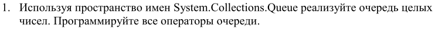
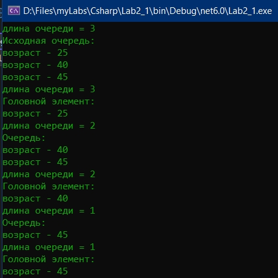
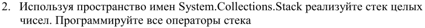
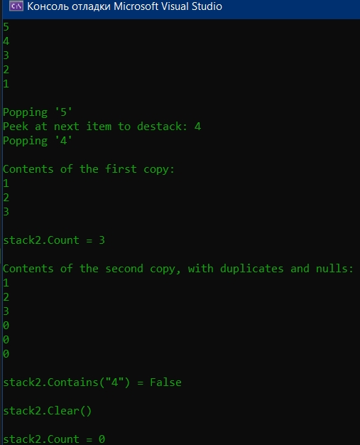
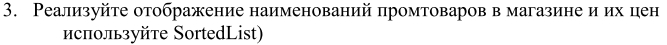
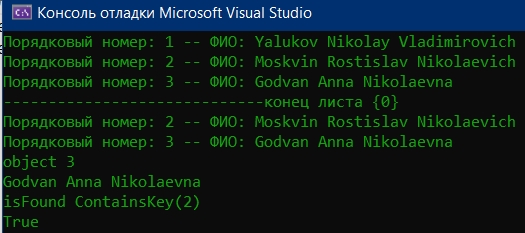

Лабораторная №2

namespace ConsoleApplication1
{
struct Client // структура Client - элемент очереди
{
public Byte Age;
public Client(Byte Age) // конструктор клиента
{
this.Age = Age;
}
public void WriteClient() // вывод данных о клиенте
{
Console.WriteLine("возраст - {0}", Age);
}
}
class Program
{
static void Main()
{
Client cl; // клиент (структура - запись)
int n = 3; // задайте количество очередей целым числом
Queue[] qe = new Queue[n]; // N очередей клиентов
Random rn = new Random(); // генератор псевдослучайных чисел
for (int j = 0; j < n; j++) // цикл по N очередям
{
qe[j] = new Queue(); // конструктор j-й очереди
for (int i = 0; i < 3; i++) // добавление в очередь клиентов
{
cl.Age = (byte)rn.Next(20, 60); // возраст клиента
qe[j].Enqueue(cl); // добавление в j-ю очередь
}
// количество элементов в очереди
Console.WriteLine("длина очереди = {0}", qe[j].Count);
Console.Write("Исходная очередь: \n");
foreach (Client kl in qe[j]) // всю j-ю очередь - на печать
kl.WriteClient();
Client kg = qe[j].Peek(); // чтение элемента из головы очереди
Console.WriteLine("длина очереди = {0}", qe[j].Count);
Console.Write("Головной элемент: \n");
kg.WriteClient(); // первый клиент в очереди
qe[j].Dequeue(); // удаление первого элемента из очереди
Console.WriteLine("длина очереди = {0}", qe[j].Count);
Console.Write("Очередь: \n");
foreach (Client kl in qe[j]) // всю очередь - на печать
kl.WriteClient();
Console.WriteLine("-----------------------------конец очереди {0} ", j); // разделитель очередей
}
Console.ReadLine();
}
}
}


class Example
{
public static void Main()
{
Stack numbers = new Stack();
numbers.Push(1);
numbers.Push(2);
numbers.Push(3);
numbers.Push(4);
numbers.Push(5);
// A stack can be enumerated without disturbing its contents.
foreach (int number in numbers)
{
Console.WriteLine(number);
}
Console.WriteLine("\nPopping '{0}'", numbers.Pop());
Console.WriteLine("Peek at next item to destack: {0}",
numbers.Peek());
Console.WriteLine("Popping '{0}'", numbers.Pop());
// Create a copy of the stack, using the ToArray method and the
// constructor that accepts an IEnumerable.
Stack stack2 = new Stack(numbers);
Console.WriteLine("\nContents of the first copy:");
foreach (int number in stack2)
{
Console.WriteLine(number);
}
// Create an array twice the size of the stack and copy the
// elements of the stack, starting at the middle of the
// array.
int[] array2 = new int[numbers.Count * 2];
numbers.CopyTo(array2, numbers.Count);
// Create a second stack, using the constructor that accepts an
// IEnumerable(Of T).
Stack stack3 = new Stack(array2);
Console.WriteLine("\nContents of the second copy, with duplicates and nulls:");
foreach (int number in stack3)
{
Console.WriteLine(number);
}
Console.WriteLine("\nstack2.Contains(\"4\") = {0}",
stack2.Contains(4));
Console.WriteLine("\nstack2.Clear()");
stack2.Clear();
Console.WriteLine("\nstack2.Count = {0}", stack2.Count);
}
}


internal class Program
{
private static void Main(string[] args)
{
SortedList fio = new SortedList();
fio.Add(1, "Yalukov Nikolay Vladimirovich");
fio.Add(2, "Moskvin Rostislav Nikolaevich");
fio.Add(3, "Godvan Anna Nikolaevna");
foreach (int i in fio.Keys)
{
Console.WriteLine("Порядковый номер: " + i +
" —— ФИО: " + fio[i]);
}
fio.Remove(1);
Console.WriteLine("-----------------------------конец листа {0} "); // разделитель очередей
foreach (int j in fio.Keys)
{
Console.WriteLine("Порядковый номер: " + j +
" —— ФИО: " + fio[j]);
}
Console.WriteLine("object 3");
object q = fio[3];
Console.WriteLine(q);
Console.WriteLine("isFound ContainsKey(2)");
bool isFound = fio.ContainsKey(2);
Console.WriteLine(isFound);
}
}

На главную